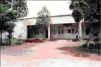

Through its long existence since 1955,
Electrical Engineering Department of Walchand College of Engineering, Sangli
has earned a great reputation and has become well known not only in our country, but also in the world through her alumni spread across the length and breadth of the globe. The Department was the second to be established in 1955 after Civil Engineering in 1947. A diploma course in Electrical Engineering also commenced the same year. Mechanical Engineering Department was also started simultaneously. Consequent to inception of the department, PG courses in two specializations, namely, Power Systems, and Control Systems were started in the year 1962. These courses are partly financed by AICTE.